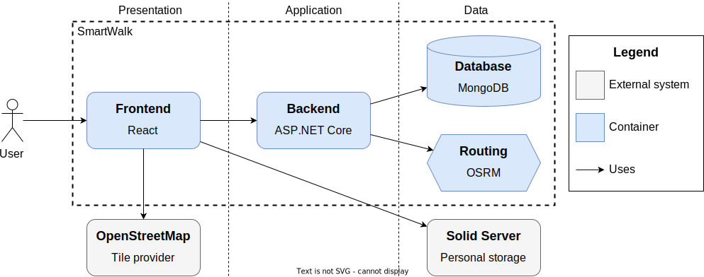
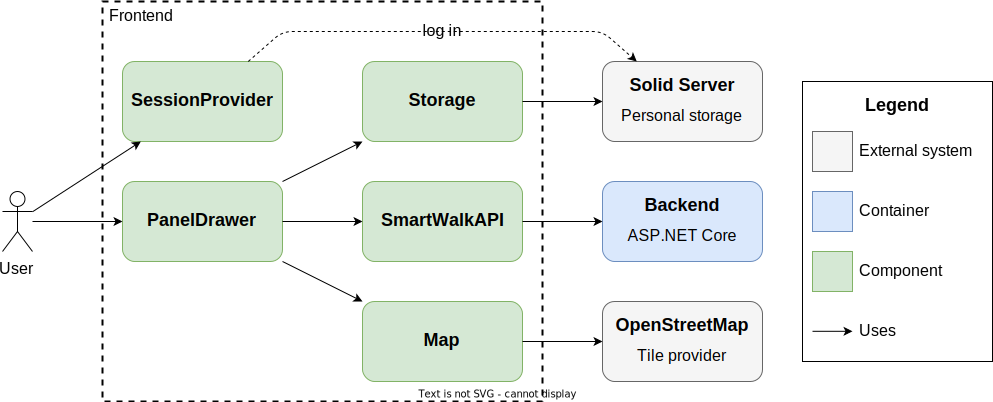
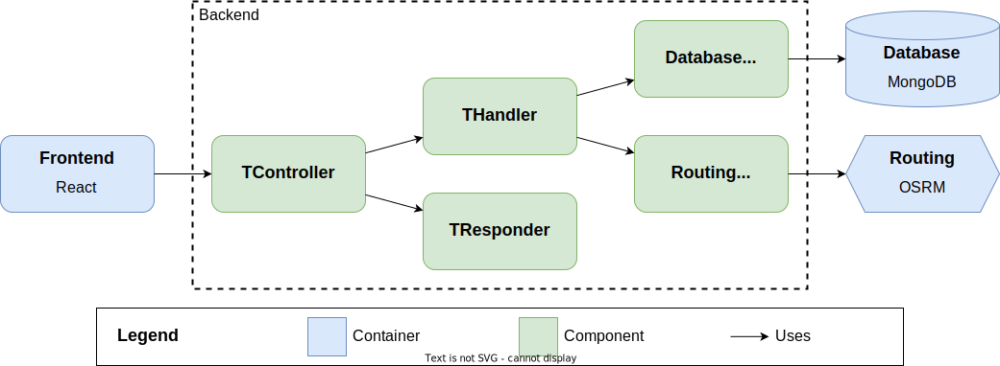

Programmer's guide
This guide introduces the main parts of the application and provides sufficient implementation details to ensure a gentle learning curve for novice contributors.
Prerequisites
To acquire the tools necessary for setting up the environment, preparing the dataset, and writing and testing source code, follow the steps outlined in Prerequisites.
Environment
Learn more about the development environment at Running the app. This section explains how to configure, start, and terminate individual parts of the system.
Repository structure
The repository has the structure depicted below. Please note that the list is not exhaustive.
./
├── Makefile . . . . . . . . . . . . . . . . . . . . . . . . . . . . . . . System maintenance
├── app/
│ ├── backend/ . . . . . . . . . . . . . . . . . . . . . . . . . . . . Web API application
│ │ ├── Dockerfile . . . . . . . . . . . . . . . . . . . . . . *backend* image definition
│ │ ├── README.md
│ │ ├── SmartWalk.Api/
│ │ ├── SmartWalk.Application/
│ │ ├── SmartWalk.Core/
│ │ ├── SmartWalk.Infrastructure/
│ │ ├── SmartWalk.<Project>.Test/ . . . . . . . . . . . . . . . . . . . . Automated tests
│ │ └── WolfGarbe.PruningRadixTrie/ . . . . . . . . . . . . . . . . . External dependency
│ └── frontend/ . . . . . . . . . . . . . . . . . . . . . . . . . . Single-page application
│ ├── Dockerfile . . . . . . . . . . . . . . . . . . . . . . . *proxy* image definition
│ ├── README.md
│ ├── config/
│ │ └── nginx/ . . . . . . . . . . . . . . . . . . . . . . . . . Nginx configuration
│ ├── public/ . . . . . . . . . . . . . . . . . . . . . . . . . . . . . . Static files
│ └── src/
│ ├── components/ . . . . . . . . . . . . . . . . . . . . . . . . React components
│ │ ├── __tests__/ . . . . . . . . . . . . . . . . . . . . . A nested test folder
│ │ │ └── PanelDrawer.test.tsx
│ │ └── PanelDrawer.tsx
│ ├── domain/ . . . . . . . . . . . . . . . . . . . . . . . . Types and interfaces
│ ├── features/ . . . . . . . . . . . . . . . . . . . . . . . . . Hooks and slices
│ └── utils/
├── data/ . . . . . . . . . . . . . . . . . . . . . . . . . . . . . . . . . . Data pipelines
│ ├── advice/
│ ├── dbpedia/
│ ├── dump/
│ ├── osm/
│ ├── restore/
│ ├── taginfo/
│ ├── wikidata-create/
│ └── wikidata-enrich/
├── infra/ . . . . . . . . . . . . . . . . . . . . . . . . . . . . . . . . Environment files
│ └── Dockerfile.routing . . . . . . . . . . . . . . . . . . . . *routing* image definition
└── misc/ . . . . . . . . . . . . . . . . . . . . . . . . . . . . . . . . . . . . Miscellanea
Architecture
The architecture of the application is demonstrated using elements of the C4 model. SmartWalk is composed of four interconnected containers: the Frontend, Backend, Database, and Routing. The first two are containerized applications from the ./app/ folder. The last ones are containers based on osrm-backend and mongo Docker images that supply business logic with actual data.

Frontend
The frontend is a React-based single-page application, serving as an entry point and offering a rich user experience. Its source code is located in the ./app/frontend/ folder.
The code documentation generated by TypeDoc is available at dev-frontend.
The following abstractions carry out the intended functionality.

Map is responsible for loading tiles and drawing markers and vector geometries on a map. The LeafletMap is a concrete implementation capable of interacting with the OSM map.
Storage is an abstraction that unifies methods for accessing both device storage and decentralized Solid pod. Data are stored on a device in IndexedDB, a standardized in-browser database, with the help of the DeviceStorage and pushed to a pod by the SolidStorage.
Please note that IndexedDB and a Solid pod are mutually exclusive storages.
SmartWalkAPI is a set of functions defined in the smartwalk.ts file for retrieving data from the backend via HTTP protocol.
Finally, the PanelDrawer and SessionProvider are React components with visual part. The former implements the panel-based user interface and client-side routing, while the latter ensures the Solid login dialog and handles the proper switch over to the Solid Session panel.
To keep panel state and resolve storage read operations locally, we use the Redux Toolkit state container composed of slices. A distinct slice is implemented for each panel, see files ending with Slice.ts in the ./src/features/ folder.
Redux Toolkit is not recommended for keeping non-serializable data, such as class instances. For this reason, Map, Storage, and cached backend responses are stored in the standard Context API.
Standard React hooks were found to be insufficient to cover the needs of the application. For custom hooks, see source files whose names end with Hooks.ts in the ./src/features/ folder.
Backend
All searching and planning functionality resides within the backend, a Web API application based on the ASP.NET Core framework. Its source code is located in the ./app/backend/ folder and consists of the following four projects:
SmartWalk.Coredefines entities, algorithms, solvers, and core-level abstract interfaces used across the application.SmartWalk.Applicationprescribes the shape of valid query objects, provides domain-level input parsers and validators, along with separate handlers for each type of supported queries.SmartWalk.Infrastructureimplements gateways to the infrastructural containers.SmartWalk.Apiserves as the presentation layer with HTTP endpoints, middlewares, and controllers.
The code documentation generated by Doxygen is available at dev-backend.
The application comprises five request pipelines with the following generic structure.

TController receives a request object and performs validation to reject malformed input early.
Well-formed data is then handed over to the corresponding domain-level THandler, a realization of a targeted use case.
TResponder is responsible for completing the response object based on three possible outcomes: a valid result of a calculation, an internal server error, or failed validation.
Finally, Gateways are entities of the data access layer that implement abstract interfaces. The application utilizes the following four gateways:
- The
TrieKeywordAdviceris a simple wrapper over PruningRadixTrie for finding the k most relevant keywords. - The
MongoEntityStoreandMongoEntityIndexare gateways to the database for fetching places bysmartIdand searching those places satisfying user-defined attribute filters. - The
OsrmRoutingEngineis a HTTP-based component for callingOSRMrouting API.
We define five HTTP-based endpoints with the supported application/json media type to facilitate the needs of the frontend.
GET /api/advice/keywords
suggest the count most relevant keywords starting with prefix.
GET /api/search/routes, /places, /direcs
handle search queries, with the only query parameter.
GET /api/entity/places/{smartId}
fetch the full representation of a place by smartId.
The API is documented using the Swashbuckle library, a toolset compatible with the OpenAPI specification. Swagger documentation is available at swagger.yaml whenever Backend container is up and running in development mode or at SwaggerHub.
ADVICE: Unfortunately, not all endpoints provide examples. To support caching, search queries are passed around as serialized and percent-encoded JSON objects. Their internal structure is given in routes.json, places.json, and direcs.json. Alternatively, you could refer to type definitions.
Data pipelines
Besides the application source code, there are small task-oriented programs in the ./data/ folder to carry out the Data preparation phase.
-
taginfo/loads key statistics from Taginfo into key-specific .json files. -
osm/combines information stored in Taginfo files, OSM binary files, and fetched from Overpass API to create new places or update existing ones. -
wikidata-create/creates simple stubs for places that do not exist yet. -
wikidata-enrich/updates the current dataset with the latest information from the Wikidata knowledge graph. -
dbpedia/does the same action aswikidata-enrich/but for DBPedia. -
advice/collects statistics about keywords and attributes across the dataset and recreates advice items. -
dump/dumps places and keywords into.txtfiles. -
restore/restores place and keyword collections from.txtdump files.
Testing
Tests for the frontend functions and components are located in nested __tests__/ folders. To run them, navigate to the ./app/frontend/ folder and enter:
$ npm run tests
Backend tests are located in dedicated projects whose names end with .Test. To run them, navigate to the ./app/backend/ folder and enter:
$ dotnet test